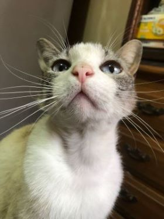

Mis mascotas
Toby y Hinata

Toby era de un amigo de mi papá que cambió de casa y como ya no podía tenerlo decidió regalarlo,
mi papá se ofreció para adoptarlo y lo trajo a la casa, al principio fue muy tímido con todos
aunque no le costó mucho adaptarse, ahora se volvió muy juguetón con todos, le gusta mucho el
pollo y es muy alegre con todos. Suele escaparse por ratos de la casa a pesar de que tiene un
terreno muy amplio para correr y jugar, tiene una "hermana" llamada Hima la cual no agregue en
esta página debido a que no tiene mucho con nosotros pero ella fue rescatada pues se veía perdida
y no encontramos a su dueño, ambos juegan juntos y también se escapan juntos, pero siempre
regresan me alegran mucho la vida pues siempre paso a verlos llegando a mi casa, les doy las
buenas noches y me despido de ellos cuando me voy.
| Alimento |
Hora |
Baño |
| Comida |
10 am |
1 vez cada tres semanas |
| Cena |
6 pm |
|

Hinata divagaba cerca del trabajo de mi papá, como a veces solía "molestar" a sus compañeros de
trabajo, consideraron llevarla a otro lado e incluso sacrificarla porque acostumbraba
a subirse a los carros, si tenía la oportunidad robaba
comida, entre otras cosas, así que al escuchar
eso mi papá decidió traerla a casa, yo decidí su nombre cuando llegó ya que soy fan del anime y sus
ojos eran muy lindos. Ya tiene bastante con nosotros, le gusta jugar de vez en cuando
aunque suele ser
muy amargada y nada cariñosa, casi siempre duerme, pero es muy buena cazadora, ya nos ha traído
algunas ratas, lagartijas y hasta ardillas. Aun así la queremos mucho y es parte de la familia a veces
duerme conmigo
sin que mi mamá se de cuenta porque no le gusta que lo haga y es muy lindo cuando pasa.
| Alimento |
Hora |
Baño |
| Comida |
9:30 am |
1 vez al mes |
| Cena |
7 pm |
|
Características de mis mascotas
- Son muy buena compañia
- Jugar con ellos es divertido
- Son muy miedosos
- Les gusta comer mucho
- Les gusta escaparse y regresar varias veces al día